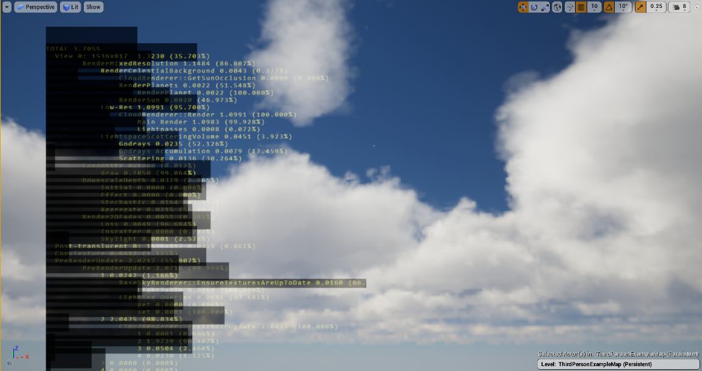
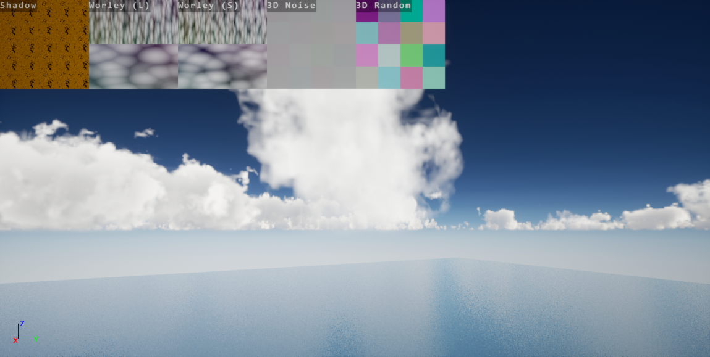

Debugging¶
Our goal is to have as much data publicly available to see as possible. If something is not working, you should know what isn’t and why.
Unreal Debug Overlays¶
To show the trueSKY debugging overlays, assign the Render Target Texture TrueSkyOverlayRT (under TrueSkyPlugin/Overlay content) to the Overlay RT slot in the trueSKY Sequence Actor. The RT texture is then used with the PostProcessVolume: under Rendering Features, add a Post Process Material, and set it to the TrueSkyOverlay material reference.
The overlays can then be set in Windows->Overlays and then select the overlays you want to show.

Celestial Display¶
Shows the current position and path of the Sun and Moon. The circles indicate the positions between the current and next keyframe.

This image shows an example of a default celestial display and an example where the Sun’s position has been altered
Profiling¶
Use profiling to determine which aspects of trueSKY are having the greatest performance cost. Adjust the CPU and GPU levels to alter the adjust the amount of information provided.
Atmospheric Tables¶
Detailed numbers on lighting values as well as colours. Issues with lighting can be looked at here.
Cube Maps¶
Shows the current cubemap which will cycle through the different Mips.
Composition¶
Here is an overview of many of the systems used, helpful for depth tests and general debugging.

Rain Overlay¶
Here is an overlay of the rain map texture. If the precipitation volume is blank, then the rain does not know where to fall. Rain will only fall under clouds, unless specifically asked not to.

3D cloud Textures¶
3D clouds textures including the shadow map texture. Helpful to see how much your Worley setting are affecting the clouds, as well as how large the shadow map is.
